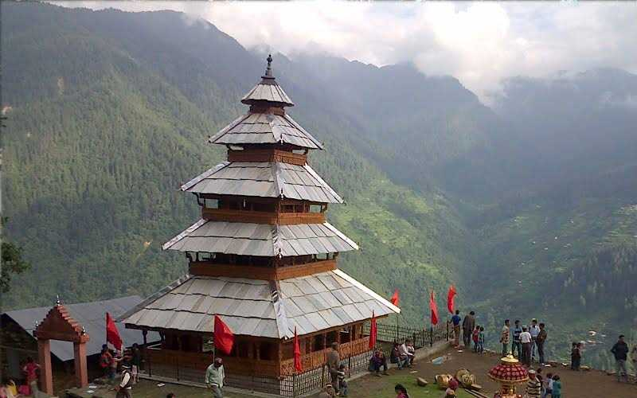
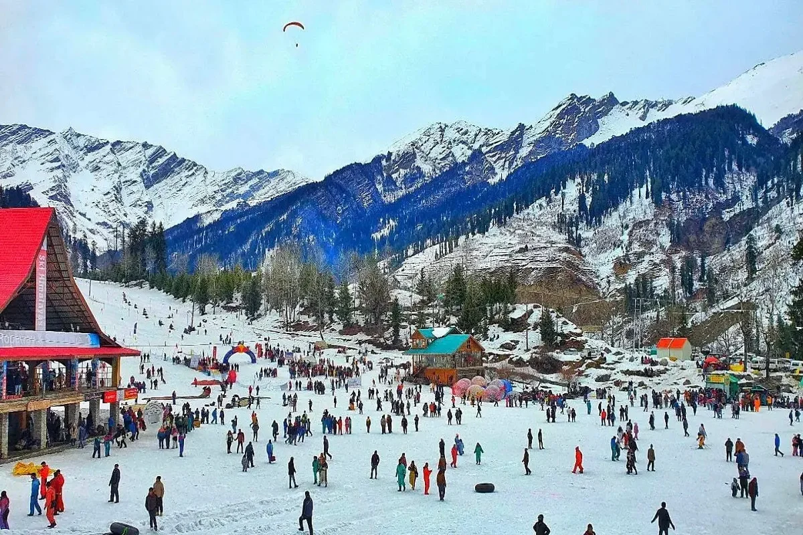
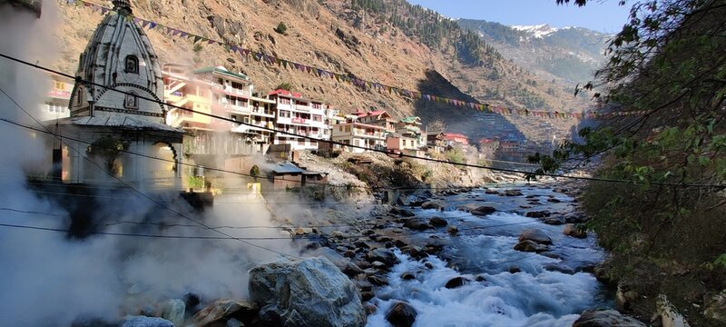

Manali Trip Itinerary
01
Vadodara → Manali
Board train/flight from Vadodara to Delhi/Chandigarh. Proceed by Volvo/tempo traveller to Manali. Overnight journey.
Meals: Dinner

02
Arrival & Local Manali
Arrive in Manali. Check-in at hotel. Visit , Manu Temple, Vashisht Hot Springs, Mall Road. Evening leisure.
Meals: Breakfast, Dinner

03
Solang Valley / Rohtang Pass
Day excursion to Solang Valley (or Rohtang Pass, subject to permit & season). Adventure sports like paragliding, skiing, ATV rides.
Meals: Breakfast, Dinner

04
Kullu & Manikaran
Day trip to Kullu for river rafting & shawl factory visit. Proceed to Manikaran Sahib Gurudwara & hot water springs. Return to Manali.
Meals: Breakfast, Dinner

05
Return to Vadodara
Check out from hotel. Drive to Chandigarh/Delhi for return train/flight to Vadodara. Trip ends with sweet memories.
Meals: Breakfast